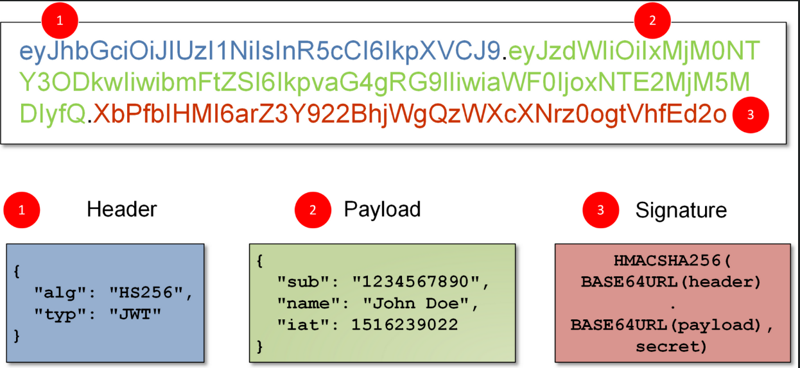

Un token JWT (JSON Web Token) est une chaîne de caractères encodée en base64 qui contient des informations d’identification et d’autorisation pour accéder à une API ou à un service web. Les tokens JWT sont utilisés pour sécuriser les API REST et GraphQL, ainsi que d’autres applications web.
Un token JWT est composé de trois parties séparées par des points : l’en-tête, la charge utile (payload) et la signature. L’en-tête spécifie le type de token et l’algorithme de cryptage utilisé pour générer la signature. La charge utile contient les données d’identification et d’autorisation, telles que l’identifiant de l’utilisateur et les rôles d’accès. La signature est utilisée pour vérifier que le token n’a pas été altéré ou falsifié.
Le processus de génération d’un token JWT implique généralement un système d’authentification qui vérifie les informations d’identification de l’utilisateur et génère ensuite un token JWT signé. Le token est ensuite renvoyé au client, qui peut l’inclure dans les requêtes ultérieures à l’API pour prouver son identité et ses autorisations.
Les tokens JWT sont populaires car ils peuvent être utilisés dans des environnements distribués, tels que les micro-services, où chaque service peut vérifier le token sans avoir besoin de contacter le système d’authentification à chaque requête. Ils sont également faciles à implémenter et à utiliser avec des frameworks et des bibliothèques populaires, tels que Express et Spring Boot.
Un token JWT est composé de 3 parties encodées en base64 séparées par un
.. La première, est un header, qui contient par
exemple l’algorithme de chiffrement utilisé. Un payload, dans
lequel le développeur peut mettre des informations comme l’email, le nom, l’id
de l’utilisateur… Le payload est visible de tous il ne faut donc pas mettre
des informations trop sensibles à l’intérieur. Le payload peut contenir
également des informations par rapport à la date d’expiration du token, s’il y
en a une. Enfin, il y a la signature. Si la signature n’est pas
modifiée, alors la validité du token est révoquée. Cela peut arriver si le
token à été modifier par un attaquant.
